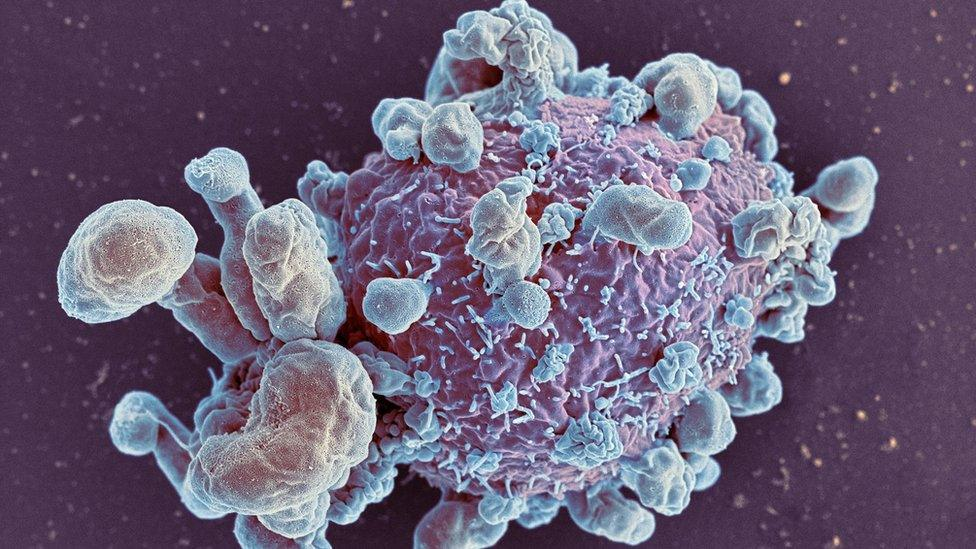
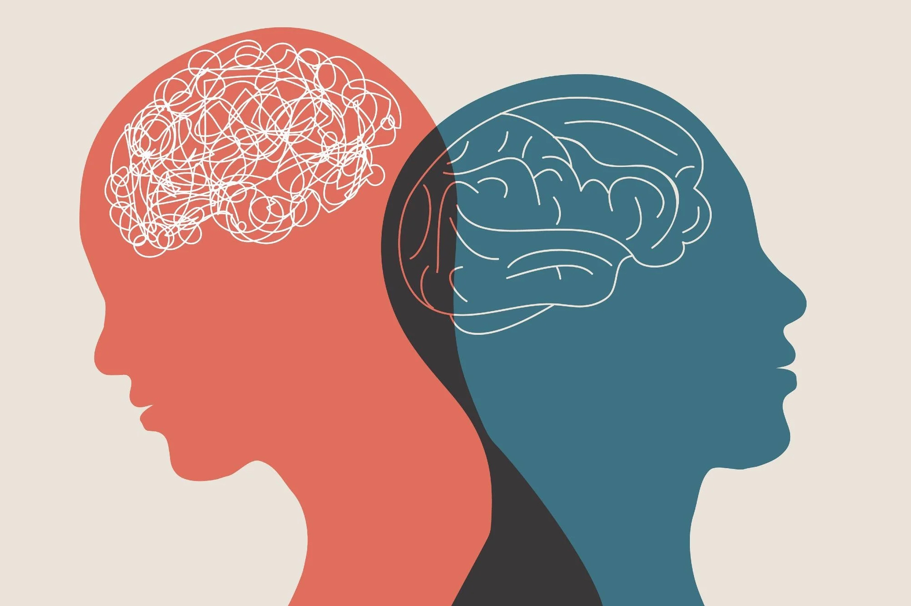

Projects
EnzymesClassification
Classification of enzymes using Machine Learning and Deep Learning techniques to determine the best-performing models for complex biological data.
Dataset: Privately owned, ~300 instances, 40 features, well-balanced across 6 enzyme types.
Techniques: Feature Selection, SVM, KNN, Decision Trees, Random Forest, Logistic Regression, CNN, FCNN, MLP, RNN
Result: FCNN achieved the best performance due to dataset complexity.

Brain Disease Detection from MRI & CT
Used ML and DL models to classify brain diseases like Alzheimer's, Meningitis, Stroke, and Tumors using CT/MRI scans.
Techniques: Feature Extraction (LBP, GLCM), SVM, MLP, CNN, ResNet, UNET
Result: Achieved over 90% accuracy. Visualizations and UNET masks included.
Tumor Classification with RNA-Seq
Classified tumor types using RNA-Seq gene expression data. Applied dimensionality reduction and classification.
Techniques: PCA, t-SNE, UMAP + various classifiers
Chest X-Ray Classification
Classified Chest X-Rays into 4 classes: Normal, Pneumonia, Covid-19, Tuberculosis. Applied Image Augmentation to balance the dataset.
Techniques: Image Augmentation, Image size scaling, Gray Scale Level correction.
Models: Pre-Trained ResNet50, Created a hybrid model with CNN and ViT.
Mental Health Depression Prediction
Developed a deep learning model to predict depression risk from a real-world mental health dataset (Kaggle comp).
Features: Suicidal thoughts, pressure, sleep, family history, CGPA
Result: TabNet model with 94% accuracy.
